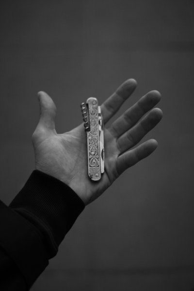

Site Name
The Story of My Knives
Site Purpose and Goals
I've liked knives since I received my first pocket knife as a Cub
Scout on my 8th birthday. Over the years I have casually collected
many knives. Some were gifts, others purchased or found. Each knife
has a story behind it. I want to tell their stories. I will
showcase
my favorite knives and tell you what I like about each.
Would you like to see a few?
This website will provide information and stories behind my favorite
knives, such as:
- "What was the first knife you owned and how old were you when you got it?"
- "Do you have a favorite knife?"
- "Do you have different knives for different purposes?"
- "What are my thoughts on knives as a useful tool?"
- "Have you ever injured yourself while using a knife?"
- "Where do you get your knives?"
- "What are your thoughts on how much to spend on a knife?"
Target Audience
The target audience includes but is not limited to:
- knife enthusiasts
- campers
- scouts
- personal history enthusiasts
- my mother
Logo or Unifying Interest Image

Color Scheme
- Text #001524
- Color1 #15616d
- Color2 #368f8b
- Color3 #ff7d00
- Color4 #78290f
- Accent1 #e63946
- Accent2 #a8dadc
- Accent3 #5f0f40
- Background #f1faee
Typography
Headings:
Regular text: